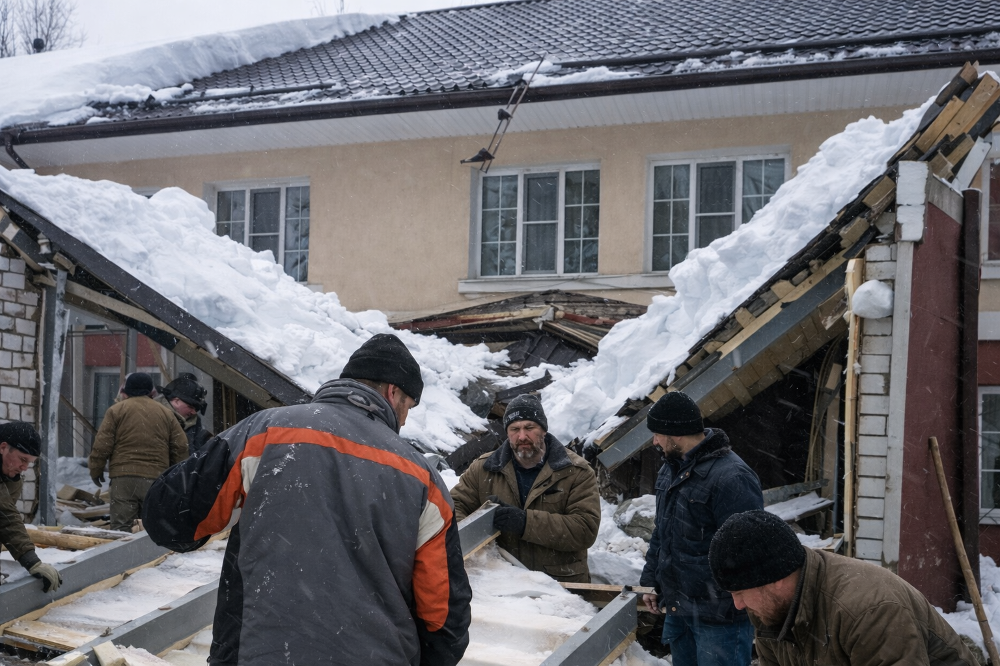

Как Виталий хотел сэкономить миллион — и потерял два
Виталий выбрал самое дешёвое предложение и убедил себя, что конструкция выдержит. Через сезон крыша прогнулась после снегопада, а потом вместе с ней сложился и весь гараж.
Эта история — про цену решений, которые в моменте кажутся выгодными.
Это реальная история одного клиента. Почти дословно — с его слов.
Я построил дом и решил, что с гаражом всё будет просто. Посмотрел предложения, выбрал тех, кто обещал сделать быстро и почти на миллион дешевле остальных.
Смету дали на словах: сказали, что «всё включено», что металл «нормальный», что переплачивать за расчёты и проект смысла нет. Я поверил, потому что звучало уверенно и по-дружески.
— Да мы всё сделаем, не переживай.
Начали бодро. Заехали, разметили площадку, быстро собрали каркас. Я приезжал вечером, смотрел из машины и думал: отлично, сейчас сэкономлю и время, и деньги.
Первые вопросы появились, когда заметил, что стойки стоят не в одной геометрии, а часть узлов просто «прихвачена», без нормального усиления. На мои замечания отвечали, что «потом всё подтянут».
— Да не переживай, сейчас выровняем.
Крышу закрыли быстро, но без нормального расчёта снеговой нагрузки и без понятной схемы водоотвода. Мне снова сказали, что это «типовой вариант» и «у всех так стоит годами».
Осенью всё выглядело нормально. А зимой выпал тяжёлый мокрый снег, и я впервые услышал, как металл внутри гаража «поёт» и щёлкает.
Через несколько дней центральная часть кровли заметно просела. Ворота стало подклинивать, дверь перестала закрываться без усилия. Я позвонил подрядчику, мне пообещали «подъехать на неделе».
Никто не приехал. Ещё через неделю после очередного снегопада крыша прогнулась сильнее, повело стойки, и конструкция буквально сложилась внутрь. Машину успел выгнать, но сам гараж был уже непригоден.
Дальше начался самый дорогой этап: демонтаж, вывоз, повторная подготовка площадки, новый каркас, новые материалы и новая бригада. То, что я «сэкономил» вначале, исчезло сразу.
По факту я потерял не миллион, а почти два: на переделке, простоях, нервах и времени. И главное — понял слишком поздно, что экономить нужно не на надёжности, а на хаосе в принятии решения.